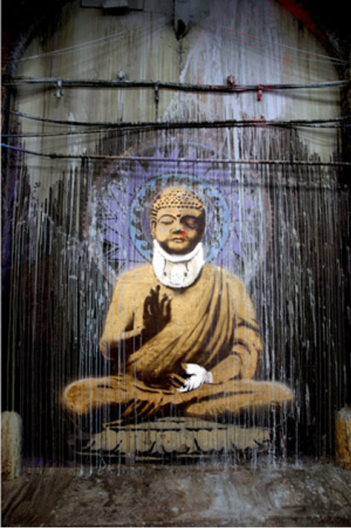

Credit
This picture showed up at the festival as a reminder to the society that other people can join the festivals as well. The work shows Buddha with a bandaged hand and facial wounds to symbolize the triumph of the mind over emotion. By this happeneing, it will get better from here on out. In front of Cannes Festival in London.
2008-05
Spray Paint
London, UK